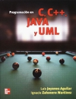
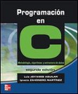
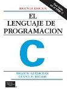

Libro de Texto
| Joyanes Aguilar, L. y Zahonero Martínez, I. Programación en C, C++, Java y UML. México : McGraw Hill, 2010. |
 |
Otras Referencias Bibliográficas
| Deitel, Paul
J. C++ how to
program. Séptima Edición. Upper Saddle River, N.J.
: Pearson Prentice Hall, 2010. |
 |
| Joyanes Aguilar, Luis. Programación en C : Libro de problemas. Madrid ; México : McGraw-Hill, 2002. |  |
| Kernighan, Brian W. El lenguaje de programación C. México : Prentice-Hall, 1985. |  |
DR© Tecnológico de Monterrey Campus Querétaro| Departamento de Desarrollo Académico| México, 2012